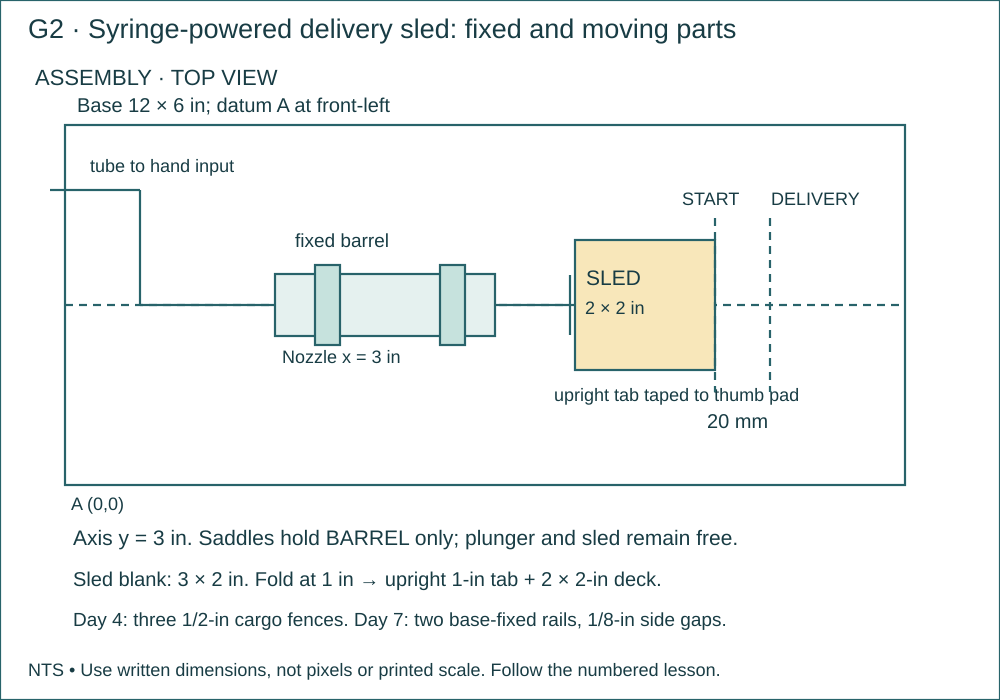

ETF Project 3 · fluid motion, fabrication, diagnosis and measured redesign
P3 · 02 · Build the Syringe-Powered Delivery Sled
Mount the output syringe on a card base and attach a sliding card sled that moves out and back with the hand input.
Name: __________________ Date: __________ · 110 minutes
Why this job?
An actuator must be mounted so the moving part can do useful work. This device delivers a light paper load to a marked position without touching the sled.
Daily kit · one crew
Each student: tape measure, pencil and graph notebook. Per crew: ruler, scissors and masking tape. Prepared water pair, card stock for the base, two saddle strips, one sled blank, 30 in tape and one 1 × 1-in paper cargo square. 12 × 6-in base; output nozzle at x = 3 in on centerline y = 3 in; two 4 × 1-in card saddle strips; sled blank 3 × 2 in, folded 1 in from one short end.
Finished means
- One water-powered sliding delivery sled with start/delivery marks and paper cargo.
- Dimensioned assembly sketch and three travel readings.

Brief · 10 minutes · Today’s exact job
- Why this job: An actuator must be mounted so the moving part can do useful work. This device delivers a light paper load to a marked position without touching the sled.
- Required today: Mount the output syringe on a card base and attach a sliding card sled that moves out and back with the hand input.
- Look at the supplied labeled drawing. Find the finished object or test setup before starting.
- Read the kit list. Take the listed continuing project out of storage; name missing items before beginning.
Notebook: Title/date; one sentence naming today’s exact object and its purpose.
Measure · 15 minutes · Measure and mark
- Mark base datum A at lower-left; draw centerline y=3 in. Mark nozzle location x=3 in.
- With output at 5 mL, check there is room to its right for the 2-in sled deck plus at least 20 mm travel before the base edge. Teacher checks fit before taping.
Notebook: Feature | required value | actual value | units | datum/endpoints. Keep repeat readings.
Plan · 15 minutes · Read the plan and work the math
- Label base, fixed barrel, two saddle straps, moving plunger, sled tab/deck and tube on the assembly sketch.
- Record two saddle locations on the smooth barrel, clear of nozzle, printed start reading and moving plunger/flange. These locations depend on the actual syringe body; measure and record them.
Notebook: Use the named sketch/table in the directions. Label views, dimensions, units and revision.
Worked example · practice values
These supplied values teach the method. Build from today’s required plan dimensions; record your own actual test data.
- In an ideal liquid system, the input area is 1 cm² and the output area is 2 cm². The input piston moves 4 cm. Predict output travel.
- A_in = 1 cm²; A_out = 2 cm²; input 4 cm: output = (1 × 4)/2 = 2 cm.
- Ideal output force would double, but do not claim you measured a force ratio without force measurements.
Build along · one move at a time
Maker acts. Checker compares with the plan. Swap at the pause. Use the complete numbered directions below.

Mark the 12 × 6-in base, the y = 3-in axis and x = 3-in nozzle location.

Make the specified saddles. Keep the plunger free and align the moving deck with the axis.

Add the START and 20-mm DELIVERY marks. Move gently through the travel and check for binding.
Make · 45 minutes · Numbered bench directions
- Cut base to 12 × 6 in. Cut two 4 × 1-in saddle strips and sled blank 3 × 2 in.
- Fold sled across its 2-in width at 1 in from a short end. Stand the 1-in tab upright; the remaining 2 × 2-in deck lies on the base.
- Lay output on centerline, nozzle at x=3 in and pointing left. Keep its 5-mL start position.
- Curve each saddle over the fixed barrel, then crease its two ends down onto the base. Tape those ends firmly to the base. Do not tape or pinch the moving plunger.
- Put the sled tab against the right-facing flat thumb pad, deck extending right. Tape tab to pad on both accessible sides; the deck must slide flat rather than hang above the base.
- Route the 60-cm tube in a broad loop to input off the left side. Tape the tube loosely to the base near the nozzle for strain relief; never flatten the tube.
- Move input slowly 20 mm. Sled should travel right. Pull input back to return the sled; do not reset it by hand.
- Draw START at the sled’s front/right edge in the reset position and a delivery line 20 mm to its right. Put the paper cargo square on the deck.
Notebook: Label made parts and note any changed dimension. A short labeled sketch is enough; do not write an essay.
Test · 15 minutes · Test and inspect
- Do three out-and-back cycles. The input hand is the only drive; output barrel stays fixed and sled clears the base edge.
- Record actual sled travel each time. Classroom acceptance for equal-syringe travel is 20 mm ±2 mm, after any bubble/mount repair; failures remain recorded.
Notebook: Copy the specified trial table; include each pass/fail or measured value and the change made.
Explain · 10 minutes · Show the finished work
- Put these on the bench: One water-powered sliding delivery sled with start/delivery marks and paper cargo.
- Dimensioned assembly sketch and three travel readings.
- Complete the independent transfer problem below. These supplied numbers are practice values; they do not change the required build dimensions.
- Input area 2 cm² moves 3 cm; output area is 3 cm². Predict output travel. Point to the mounting feature that prevents sideways motion.
- Save one short individual answer with units, working and notebook page/date. Show the teacher your own physical measurement and plan interpretation. Store the labeled project and return shared supplies.
Notebook: Individual transfer calculation with units + page/date containing the practical evidence.